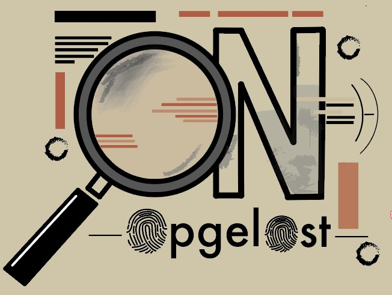

Home
Welkom bij onze podcast, waar we onopgeloste moordzaken een stem geven. In onze show duiken we in de wereld van cold cases en laten we slachtoffers zelf hun verhaal delen. We richten ons op bekende personen die in de jaren '80 of '90 zijn vermoord – verhalen die nog altijd vragen oproepen en emoties losmaken. Met onze unieke aanpak willen we niet alleen aandacht vragen voor deze tragische zaken, maar ook een ongekende luisterervaring bieden. Door de verhalen van deze slachtoffers opnieuw tot leven te brengen, creëren we een bijzondere, soms confronterende, maar altijd impactvolle podcast. Sluit je aan en laat je meeslepen door de stemmen van het verleden.
